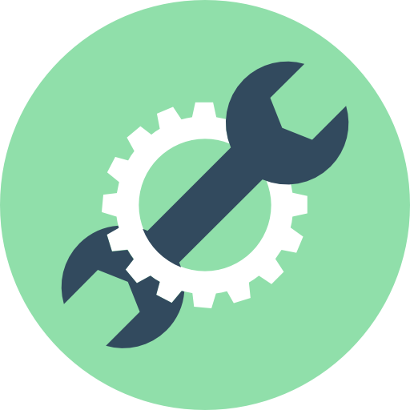

Чому нам довіряють?


- Працюємо з усіма марками авто
- Професійне обладнання - 2 стапеля, фарбувально- сушильна камера, ПЗ
- Матеріали від перевірених виробників
- Знаходимося в Києві, але можемо оцінити стан авто і віддалено
- Діагностика, ремонт та відновлення всіх систем автомобіля